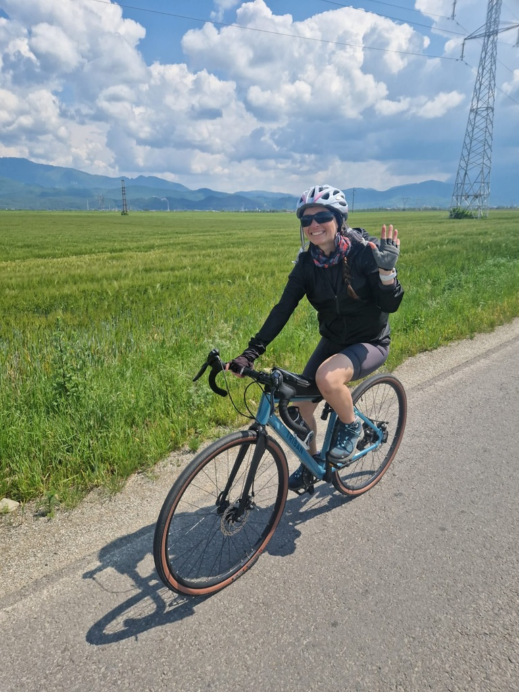
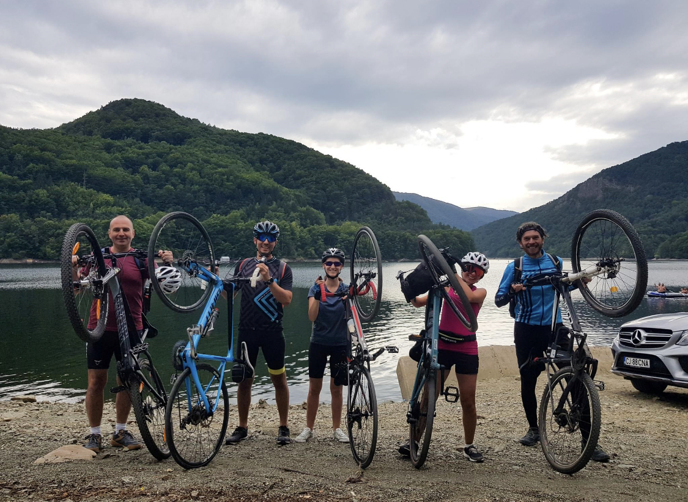
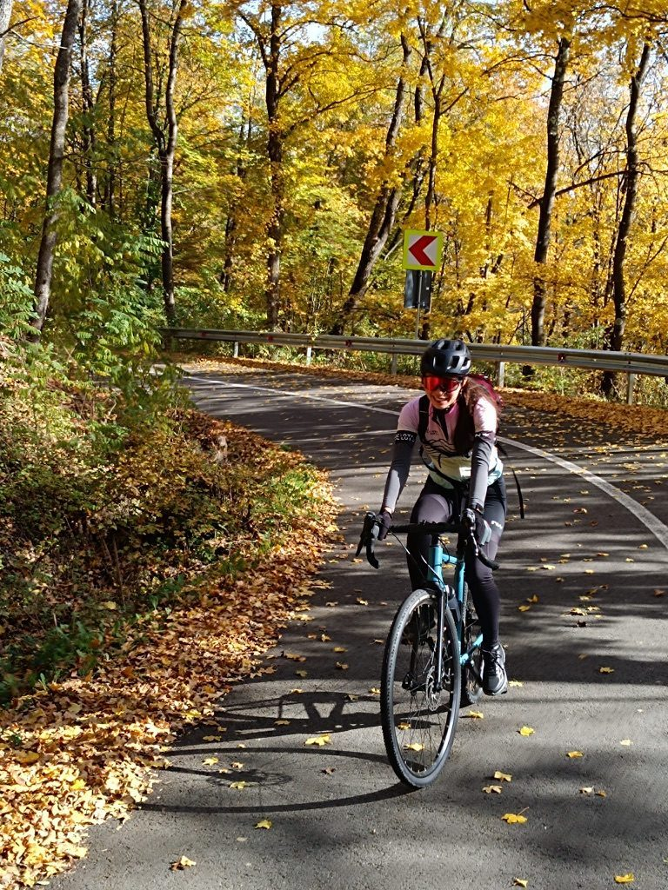
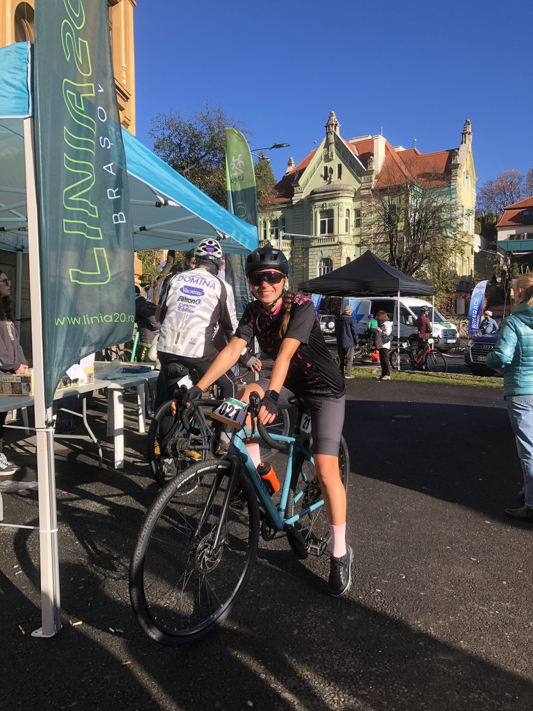
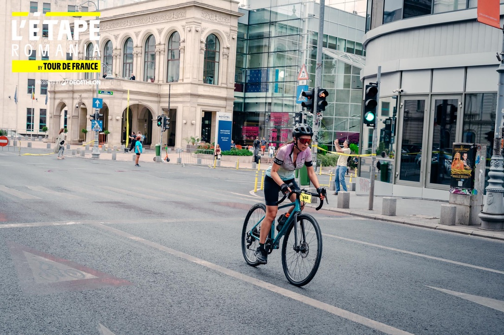
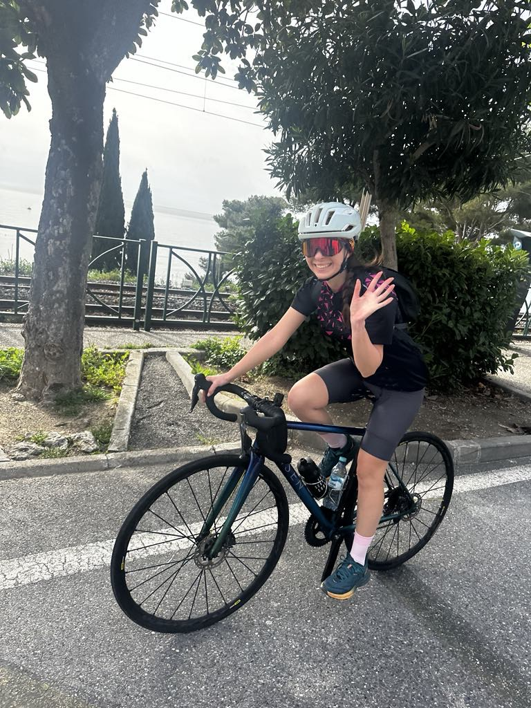

The road bike was, on paper, a practical decision. I already had the Orbea for mountain trails and gravel, and there is a category of road — smooth, long, reasonably fast — where the MTB is honest enough to remind you that it is not the right tool for this. A road bike is the right tool. I bought one. That was the beginning of something I did not fully anticipate.
The thing about road cycling is that it looks easy from the outside. You're on a smooth surface. There are no rocks. The gradient is predictable. What you find out when you clip in for the first time is that the bike is light and fast and has absolutely no patience for hesitation — it goes where you point it, at the speed the road allows, and the question is whether you can hold that conversation for long enough.
The first ride
Outside Brașov, in early spring, green fields and the Carpathians in the background and a power line running along the road that I did not photograph on purpose because it was there anyway. I waved at the camera. This is what you do on the first ride — you wave, because you are not yet sure what else to communicate.

Outside Brașov. One of the first rides. The legs did not yet know what was coming. Neither did I, honestly.
The Brașov area is good for this kind of beginning — the roads between the fields are quiet and flat enough to find your position, and the mountains on the horizon give you something to look at when the effort gets uncomfortable. I rode until the legs said that was enough, turned around, and came back. Classic first-ride logic. No ambition, just reconnaissance.
The group rides
Road cycling by yourself is a meditation. Road cycling with other people is a negotiation — about pace, about hills, about who pulls at the front and for how long, about whether we stop at the lake or push through to the next climb. We stopped at the lake.

The correct way to arrive at a mountain lake by bike: lift it above your head so everyone knows you made it under your own power.
The ritual of lifting the bike over your head at a scenic point is something that happens organically in cycling groups — nobody proposes it, someone just does it and everyone else follows, and then you have a photo that communicates exactly the right amount of shared satisfaction without needing any words. We rode back in the rain. That is also part of it.
Autumn
October on Romanian roads has a specific quality that I haven't found anywhere else — the forest turns gold all at once, the roads that run through it become tunnels of yellow light, and the combination of cold air and the smell of fallen leaves and the sound of the bike on wet tarmac is one of those sensory combinations that gets filed immediately as a memory rather than an experience.

October. Somewhere in the hills. The road curves left. The autumn does what autumn does. You just ride through it and try to remember it correctly later.
Autumn riding requires a specific wardrobe calculation — warm enough for the descents, which will be cold, light enough for the climbs, which will not be. You get it slightly wrong almost every time. This is fine. The view compensates.
The first race — Brașov
Someone suggested entering the race at Linia 20 in Brașov and I said yes in the way you say yes to things that sound achievable before you've thought about them too carefully. The race is a city criterium — closed roads, multiple laps, everyone going faster than you expected. I showed up with race number 021, a smile I was using to cover the nerves, and a bike I had been riding for a few months.

Linia 20, Brașov. Race number 021. The smile is genuine. The nerves were also genuine. Both things were true at the same time.
What I learned from the first race: criterium racing is fast in a way that training does not fully prepare you for. The bunch moves differently from solo riding — there are wheels very close to yours, the pace surges without warning, and the corners require a specific commitment that you either have or you find out you don't. I found out I had some of it. Enough to finish. Not enough to be confused about my position. This was the appropriate outcome for a first race and I was not unhappy about it.
L'Etape Romania — by Tour de France
The jump from a Brașov criterium to L'Etape Romania happened faster than it should have. L'Etape is a Tour de France-sanctioned sportive — the format where amateurs ride a stage on a closed, official Tour de France route. The Romania edition goes through Bucharest. The streets are closed. There is a bib number and a timing chip and an official start line and the logo says Tour de France.

L'Etape Romania. Bib 944. Bucharest city centre, closed roads, Tour de France branding on the barriers. This is not where I expected to be six months after the first ride outside Brașov.
Riding through Bucharest on closed roads is strange in a specific way — the city that is normally a continuous negotiation between cars and buses and trams suddenly belongs entirely to bikes, and you can take the line you want through intersections that normally you'd never consider, and the buildings look different when you're moving at 35km/h with no traffic to manage.
I did not win. This was not the goal. The goal was to finish a Tour de France-sanctioned race in my own capital city on a bike I'd owned for less than a year, and I did that, and the feeling at the finish was one of those uncomplicated satisfactions that doesn't need any qualifying statements.
Nice — the road bike at its natural habitat
If road cycling has a spiritual home, it is somewhere on the Côte d'Azur — specifically on the roads above Nice and Monaco where the gradients are serious, the views are unreasonable, and the cyclists you encounter have the look of people who treat this as a necessary part of existing rather than a hobby. I rented a proper road bike and went out early before the heat built up.

Nice. A rented road bike. The wave says: I am here, on this road, among these cypress trees, doing this. The smile says it was the right decision.
The Nice roads are fast on the descents in a way that requires a different relationship with your brakes than the Romanian hills — the corners are tighter, the drop steeper, and the consequences of a mistake are more final. On the climbs, the gradient is honest and patient. You either have the legs or you don't, and the Mediterranean below tells you exactly how high you've come.
I understood on those roads why road cycling becomes something people organise their lives around. There is a quality of sustained effort that produces a specific kind of clarity — not the adrenaline of the descent or the achievement of the summit, but the long middle section where the body is fully occupied and the mind goes somewhere quieter. The road. The legs. The next corner. Nothing else fits in.
I bought the bike as a practical decision. It turned out to be something else entirely.